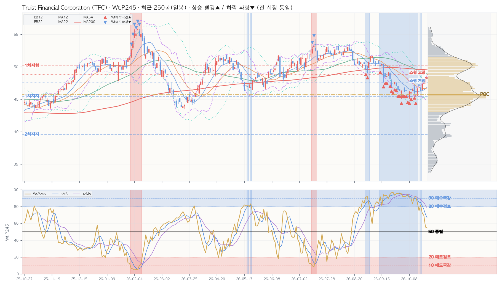

| 구분 | 가격 | 현재가 대비 | 거래 비중 | 봉우리 높이 |
|---|---|---|---|---|
| ▲ 저항 1차 | 50.19 | +3.6% | 11.5% | 0.31 |
| ▲ 저항 2·3차 — | 현재가 위 거래 봉우리 1개뿐 | |||
| ■ 소화 중 — | 현재가 ±0.25×ATR 안 거래 봉우리 없음 | |||
| ▼ 지지 1차 | 45.47 | -6.1% | 13.2% | 0.94 |
| ▼ 지지 2차 | 39.57 | -18.3% | 4.7% | 0.11 |
| ▼ 지지 3차 — | 현재가 아래 거래 봉우리 2개뿐 | |||
| ┄ 스윙 고점 (참고) | 48.82 | +0.8% | 피벗 7개 · 마지막 37봉 전 | |
| ┄ 스윙 저점 (참고) | 47.54 | -1.9% | 피벗 7개 · 마지막 89봉 전 | |
| 지표 | D 일봉 | W 주봉 | M 월봉 |
|---|---|---|---|
| Close | 48.44 | 48.44 | 48.44 |
| Chg% | ▲ +0.04% | ▲ +2.91% | ▲ +4.62% |
| SigNm | 38.7 | 46.3 | 53.3 |
| SigRk | 46.3 | 63.3 | 79.7 |
| PvN2 | 2 | 1 | 0 |
| WtAll | 53 | 63 | 79 |
nix_snapshot_market_temp_us.json (2026-10-23 · 읽기 전용 크로스 참조)| 창 | 5봉 | 12봉 | 22봉 | 54봉 | 120봉 | 245봉 | 컴포짓 | 주봉 참고 |
|---|---|---|---|---|---|---|---|---|
| 사분면 | 개선 | 개선 | 지연 | 지연 | 지연 | 개선 | 지연 | 지연 |
| RS-Ratio | 85.09 ▲ | 80.82 ▲ | 78.07 ▲ | 79.71 ▼ | 73.07 ▲ | 78.59 ▼ | 78.43 ▲ | 80.83 ▼ |
| RS-Momentum | 109.71 ▼ | 103.47 ▲ | 92.84 ▲ | 92.67 ▼ | 74.55 ▲ | 113.10 ▼ | 96.78 ▲ | 97.43 ▲ |
| Perf | Mac | Tcr.U | Tcr.D | Zc | BBs | PvN2 | Sts | Wt.P245 | SA.P245 | SA02.P245 | S122.P245 | S051.P245 | SU31.P245 | Inds.Sig | ||||||||||||||||||||||||||||||||||||||||||||||||||
|---|---|---|---|---|---|---|---|---|---|---|---|---|---|---|---|---|---|---|---|---|---|---|---|---|---|---|---|---|---|---|---|---|---|---|---|---|---|---|---|---|---|---|---|---|---|---|---|---|---|---|---|---|---|---|---|---|---|---|---|---|---|---|---|---|
| SigNm | SigRk | |||||||||||||||||||||||||||||||||||||||||||||||||||||||||||||||
| Date | T-Set | H | L | C | V | Chg% | DChg% | YTD | P5 | P12 | P16 | P22 | P54 | P120 | P245 | Cdl | 종합 | 단 | 중 | 장 | 5 | 12 | 22 | 54 | 5 | 12 | 22 | 54 | 12 | 22 | 54 | 12 | 22 | 54 | D | MA_Sts | C_Sts | EMC_Sts | .P | .J | Bar(P) | Ar | .P | .J | Bar(P) | Ar | .P | .J | Bar(P) | Ar | .P | .J | Bar(P) | Ar | .P | .J | Bar(P) | Ar | .P | .J | Bar(P) | Ar | D | D |
| 2026-10-23 | US500 | 48.61 | 47.83 | 48.44 | 6.6M | +0.0 | +0.0 | -2.6 | +2.9 | +6.3 | +4.7 | +3.1 | -7.5 | -2.1 | +8.5 | 0 | 0 | -5 | 0 | 4 | 0.8 | 1.3 | 1.1 | 1.3 | 0.1 | 0.1 | 0.1 | 2.0 | 1.7 | 2.2 | -0.2 | 0 | 0.7 | 0 | +2 | 🟥🟥🟥🟦🟦🟥🟥🟥 | 🟥🟦🟦🟦🟦🟥🟥🟥 | 🟥🟦🟦🟦🟥🟥🟥🟥 | 54.6 | 📈 | ███████ | ▼ | 35.9 | 🔶 | ████ | ▼ | 85.0 | Ⓜ️ | ███████████ | ▼ | 23.1 | 🟥 | ███ | ▼ | 88.7 | Ⓜ️ | ███████████ | ▼ | 10.2 | 🆘 | █ | ▼ | 38.7 | 46.3 |
| 2026-10-22 | US500 | 48.44 | 47.44 | 48.42 | 6.3M | +1.4 | +0.0 | -2.7 | +4.0 | +4.7 | +4.6 | +0.7 | -7.9 | -4.9 | +9.2 | -11 | -2 | -11 | 0 | 4 | 0.7 | 1.1 | 1.1 | 1.1 | 0.1 | 0.1 | 0.1 | 2.0 | 2.2 | 2.5 | -0.3 | 0.3 | 0.8 | 0 | +2 | 🟥🟥🟥🟦🟦🟦🟥🟥 | 🟥🟦🟦🟦🟦🟥🟥🟥 | 🟥🟦🟦🟦🟥🟥🟥🟥 | 55.7 | 🔹 | ███████ | ▼ | 33.3 | 🟠 | ████ | ▼ | 87.9 | Ⓜ️ | ███████████ | ▼ | 2.6 | ⛔ | ▼ | 91.6 | 🅿️ | ███████████ | ▼ | 13.9 | 🆘 | █ | ▼ | 40.3 | 48.5 | |
| 2026-10-21 | US500 | 47.88 | 47.27 | 47.73 | 6.7M | +0.8 | +1.5 | -4.0 | +4.7 | +3.0 | +2.8 | -2.6 | -9.7 | -7.3 | +8.7 | -2 | -2 | -11 | 0 | 4 | 0.8 | 0.8 | 0.8 | 0.8 | 0.2 | 0.2 | 0.6 | 2.1 | 2.0 | 1.7 | -0.6 | 0.3 | 0 | 0 | +1 | 🟥🟥🟥🟦🟦🟦🟥🟥 | 🟥🟦🟦🟦🟦🟥🟥🟥 | 🟥🟦🟦🟦🟦🟥🟥🟥 | 69.5 | 🔷 | █████████ | ▼ | 60.3 | 🔷 | ███████ | ▼ | 89.9 | Ⓜ️ | ███████████ | ↔ | 38.1 | 🔶 | ████ | ▼ | 92.6 | 🅿️ | ████████████ | ▲ | 30.7 | 🟠 | ███ | ▼ | 45.5 | 54.2 |
| 2026-10-20 | US500 | 47.43 | 46.47 | 47.33 | 9.3M | +2.2 | +2.3 | -4.8 | +3.1 | +1.9 | +0.5 | -2.5 | -10.1 | -6.6 | +6.8 | -11 | -2 | -11 | 0 | 4 | 0.7 | 0.6 | 0.6 | 0.7 | 0.3 | 0.3 | 0.7 | 2.2 | 2.0 | 0.8 | -0.8 | 0.2 | 0 | 0 | +1 | 🟥🟥🟥🟦🟦🟦🟥🟥 | 🟦🟦🟦🟦🟦🟥🟥🟥 | 🟦🟦🟦🟦🟦🟥🟥🟥 | 72.3 | 🔵 | █████████ | ▼ | 63.0 | 🔷 | ████████ | ▼ | 90.5 | 🅿️ | ███████████ | ↔ | 42.5 | 🔸 | █████ | ▼ | 91.8 | 🅿️ | ███████████ | ↔ | 35.8 | 🔶 | ████ | ↔ | 48.5 | 57.1 |
| 2026-10-19 | US500 | 47.00 | 46.31 | 46.32 | 8.4M | -1.6 | +4.6 | -6.9 | -0.7 | +0.1 | -2.8 | -4.4 | -10.8 | -9.4 | +3.8 | 11 | -2 | -11 | 0 | 4 | 0.5 | 0.4 | 0.5 | 0.5 | 0.5 | 0.4 | 0.9 | 2.4 | 0.2 | -0.5 | -1.2 | 0 | 0 | 0 | 0 | 🟥🟥🟥🟦🟦🟦🟥🟥 | 🟦🟦🟦🟦🟦🟦🟥🟥 | 🟦🟦🟦🟦🟦🟦🟦🟦 | 81.8 | 🟦 | ██████████ | ▼ | 69.6 | 🔷 | █████████ | ▼ | 90.2 | 🅿️ | ███████████ | ↔ | 58.6 | 🔹 | ███████ | ↔ | 90.6 | 🅿️ | ███████████ | ↔ | 37.8 | 🔶 | ████ | ↔ | 67.3 | 70.5 |
| 2026-10-16 | US500 | 47.96 | 46.89 | 47.07 | 14.1M | +1.1 | +2.9 | -5.4 | +2.1 | +1.7 | -0.2 | -2.8 | -9.2 | -8.1 | +6.5 | 0 | -2 | -11 | 0 | 4 | 0.4 | 0.5 | 0.6 | 0.6 | 0.3 | 0.3 | 1.0 | 2.2 | 2.0 | 0.2 | -1.0 | 1.9 | 0 | 0 | +1 | 🟥🟥🟥🟦🟦🟦🟥🟥 | 🟦🟦🟦🟦🟦🟥🟥🟥 | 🟦🟦🟦🟦🟦🟦🟥🟥 | 75.1 | 🔵 | █████████ | ▼ | 68.4 | 🔷 | ████████ | ▼ | 90.5 | 🅿️ | ███████████ | ↔ | 21.1 | 🟥 | ██ | ▼ | 91.5 | 🅿️ | ███████████ | ↔ | 25.0 | 🟥 | ███ | ▼ | 50.1 | 58.2 |
| 2026-10-15 | US500 | 46.73 | 45.51 | 46.57 | 12.6M | +2.2 | +4.0 | -6.4 | +0.8 | +0.3 | -0.9 | -7.7 | -10.5 | -8.2 | +6.8 | -10 | -2 | -11 | 0 | 4 | 0.4 | 0.4 | 0.5 | 0.4 | 0.3 | 0.3 | 1.6 | 2.5 | 1.2 | -0.3 | -1.2 | -0.0 | 0 | 0 | 0 | 🟥🟥🟥🟦🟦🟦🟦🟥 | 🟦🟦🟦🟦🟦🟦🟥🟥 | 🟦🟦🟦🟦🟦🟦🟥🟥 | 84.5 | 🟦 | ██████████ | ▼ | 85.1 | Ⓜ️ | ███████████ | ▼ | 90.9 | 🅿️ | ███████████ | ↔ | 61.3 | 🔷 | ███████ | ▼ | 92.1 | 🅿️ | ███████████ | ↔ | 32.0 | 🟠 | ████ | ▼ | 56.4 | 64.0 |
| 2026-10-14 | US500 | 45.70 | 45.06 | 45.57 | 7.6M | -0.8 | +6.3 | -8.4 | -0.0 | -3.2 | -5.2 | -9.0 | -12.9 | -11.3 | +4.5 | 8 | -2 | -11 | 0 | 4 | 0.2 | 0.2 | 0.3 | 0.2 | 0.5 | 0.6 | 2.2 | 2.8 | -1.9 | -1.2 | -1.7 | -1.0 | 0 | 0 | -6 | 🟥🟥🟥🟦🟦🟦🟦🟦 | 🟦🟦🟦🟦🟦🟦🟦🟦 | 🟦🟦🟦🟦🟦🟦🟦🟦 | 91.8 | 🅿️ | ███████████ | ↔ | 90.2 | 🅿️ | ███████████ | ↔ | 91.2 | 🅿️ | ███████████ | ↔ | 85.3 | Ⓜ️ | ███████████ | ↔ | 93.1 | 🅿️ | ████████████ | ▲ | 23.4 | 🟥 | ███ | ▼ | 76.9 | 81.6 |
| 2026-10-13 | US500 | 47.21 | 45.88 | 45.92 | 6.7M | -1.5 | +5.5 | -7.7 | -0.7 | -3.7 | -6.3 | -8.9 | -13.3 | -9.9 | +4.8 | 11 | -6 | -7 | -7 | -5 | 0.3 | 0.4 | 0.4 | 0.4 | 0.3 | 0.5 | 2.1 | 2.6 | -1.1 | -1.0 | -1.6 | 0.4 | 0 | 0 | 0 | 🟥🟥🟥🟦🟦🟦🟦🟦 | 🟦🟦🟦🟦🟦🟦🟦🟦 | 🟦🟦🟦🟦🟦🟦🟦🟦 | 91.1 | 🅿️ | ███████████ | ↔ | 90.1 | 🅿️ | ███████████ | ↔ | 90.4 | 🅿️ | ███████████ | ↔ | 92.1 | 🅿️ | ███████████ | ↔ | 92.9 | 🅿️ | ████████████ | ▲ | 33.1 | 🟠 | ████ | ▼ | 72.9 | 79.1 |
| 2026-10-12 | US500 | 46.71 | 46.23 | 46.64 | 6.3M | +1.1 | +3.9 | -6.2 | +0.7 | -1.1 | -4.0 | -7.3 | -10.5 | -8.7 | +7.3 | -11 | -6 | -7 | -7 | -5 | 0.8 | 0.6 | 0.6 | 0.5 | 0.2 | 0.6 | 2.1 | 2.6 | 0.4 | -0.6 | -1.4 | 0 | 0 | 0 | 0 | 🟥🟥🟥🟦🟦🟦🟦🟥 | 🟦🟦🟦🟦🟦🟦🟥🟥 | 🟦🟦🟦🟦🟦🟦🟦🟥 | 83.4 | 🟦 | ██████████ | ▼ | 79.5 | 🔵 | ██████████ | ▼ | 89.5 | Ⓜ️ | ███████████ | ▼ | 23.5 | 🟥 | ███ | ▼ | 92.1 | 🅿️ | ███████████ | ↔ | 44.2 | 🔸 | █████ | ↔ | 58.5 | 70.3 |
| 2026-10-09 | US500 | 46.32 | 45.73 | 46.11 | 6.8M | -0.2 | +5.1 | -7.3 | -0.7 | -1.9 | -4.8 | -8.1 | -10.9 | -9.3 | +8.2 | 4 | -6 | -7 | -7 | -5 | 0.4 | 0.4 | 0.4 | 0.4 | 0.3 | 0.7 | 2.2 | 2.7 | -0.7 | -1.0 | -1.7 | 0 | 0 | 0 | 0 | 🟥🟥🟥🟦🟦🟦🟦🟥 | 🟦🟦🟦🟦🟦🟦🟦🟥 | 🟦🟦🟦🟦🟦🟦🟦🟦 | 90.1 | 🅿️ | ███████████ | ▼ | 90.2 | 🅿️ | ███████████ | ▼ | 90.4 | 🅿️ | ███████████ | ▼ | 52.4 | 📈 | ██████ | ▼ | 92.7 | 🅿️ | ████████████ | ↔ | 79.5 | 🔵 | ██████████ | ↔ | 65.7 | 78.9 |
| 2026-10-08 | US500 | 46.24 | 45.07 | 46.18 | 9.4M | +1.3 | +4.9 | -7.2 | -0.2 | -3.9 | -4.7 | -8.6 | -9.8 | -8.7 | +12.4 | -11 | -6 | -7 | -7 | -5 | 0.3 | 0.4 | 0.4 | 0.3 | 0.2 | 0.8 | 2.1 | 2.5 | -0.7 | -1.0 | -1.7 | -0.9 | 0 | -1.1 | 0 | 🟥🟥🟥🟦🟦🟦🟦🟥 | 🟦🟦🟦🟦🟦🟦🟦🟥 | 🟦🟦🟦🟦🟦🟦🟦🟥 | 90.3 | 🅿️ | ███████████ | ▼ | 92.1 | 🅿️ | ███████████ | ▼ | 90.6 | 🅿️ | ███████████ | ↔ | 55.2 | 🔹 | ███████ | ▼ | 91.6 | 🅿️ | ███████████ | ↔ | 90.6 | 🅿️ | ███████████ | ▲ | 63.5 | 76.0 |
| 2026-10-07 | US500 | 45.95 | 45.26 | 45.58 | 7.6M | -1.4 | +6.3 | -8.4 | -1.6 | -7.0 | -9.7 | -11.8 | -11.9 | -7.8 | +5.4 | 2 | -6 | -7 | -7 | -5 | 0.3 | 0.3 | 0.3 | 0.3 | 0.4 | 1.4 | 2.6 | 2.6 | -1.7 | -1.5 | -2.1 | -0.3 | 0 | -1.1 | -6 | 🟥🟥🟥🟦🟦🟦🟦🟦 | 🟦🟦🟦🟦🟦🟦🟦🟦 | 🟦🟦🟦🟦🟦🟦🟦🟦 | 94.5 | 🅿️ | ████████████ | ↔ | 96.8 | ✅ | ████████████ | ↔ | 90.4 | 🅿️ | ███████████ | ▼ | 98.0 | ✅ | ████████████ | ↔ | 90.6 | 🅿️ | ███████████ | ↔ | 91.8 | 🅿️ | ███████████ | ▲ | 79.8 | 86.4 |
| 2026-10-06 | US500 | 46.82 | 46.16 | 46.25 | 8.4M | -0.2 | +4.7 | -7.0 | -0.4 | -4.8 | -7.7 | -10.4 | -10.0 | -6.7 | +5.3 | 8 | -6 | -7 | -7 | -5 | 0.6 | 0.6 | 0.6 | 0.4 | 0.3 | 1.4 | 2.5 | 2.5 | -0.9 | -1.2 | -1.9 | 0 | 0 | 0 | -6 | 🟥🟥🟥🟥🟦🟦🟦🟦 | 🟦🟦🟦🟦🟦🟦🟦🟦 | 🟦🟦🟦🟦🟦🟦🟦🟦 | 92.4 | 🅿️ | ████████████ | ▼ | 92.7 | 🅿️ | ████████████ | ↔ | 90.1 | 🅿️ | ███████████ | ▼ | 80.9 | 🟦 | ██████████ | ▲ | 88.9 | Ⓜ️ | ███████████ | ▼ | 89.0 | Ⓜ️ | ███████████ | ▲ | 74.8 | 82.7 |
| 2026-10-05 | US500 | 46.80 | 46.12 | 46.33 | 10.4M | -0.3 | +4.6 | -6.9 | -1.6 | -4.4 | -8.1 | -8.8 | -9.2 | -6.5 | +7.9 | 11 | -6 | -7 | -7 | -5 | 0.8 | 0.5 | 0.5 | 0.4 | 0.5 | 1.2 | 2.3 | 2.4 | -1.0 | -1.3 | -2.0 | 0 | 0 | -0.4 | 0 | 🟥🟥🟥🟥🟦🟦🟦🟦 | 🟦🟦🟦🟦🟦🟦🟦🟦 | 🟦🟦🟦🟦🟦🟦🟦🟦 | 92.1 | 🅿️ | ███████████ | ↔ | 93.4 | 🅿️ | ████████████ | ↔ | 90.5 | 🅿️ | ███████████ | ▼ | 76.6 | 🔵 | █████████ | ↔ | 89.1 | Ⓜ️ | ███████████ | ▼ | 89.0 | Ⓜ️ | ███████████ | ▲ | 69.1 | 80.4 |
| 2026-10-02 | US500 | 46.73 | 46.21 | 46.45 | 9.1M | +0.4 | +4.3 | -6.6 | -2.5 | -4.1 | -7.7 | -6.0 | -11.5 | -7.1 | +9.8 | -9 | -6 | -7 | -7 | -5 | 0.5 | 0.5 | 0.5 | 0.4 | 0.5 | 1.3 | 2.2 | 2.3 | -1.0 | -1.3 | -2.0 | 0 | 0 | -0.7 | 0 | 🟥🟥🟥🟥🟦🟦🟦🟦 | 🟦🟦🟦🟦🟦🟦🟦🟦 | 🟦🟦🟦🟦🟦🟦🟦🟦 | 91.9 | 🅿️ | ███████████ | ↔ | 94.6 | 🅿️ | ████████████ | ↔ | 91.0 | 🅿️ | ███████████ | ▼ | 57.3 | 🔹 | ███████ | ↔ | 89.2 | Ⓜ️ | ███████████ | ▼ | 90.5 | 🅿️ | ███████████ | ▲ | 64.3 | 78.1 |
| Perf | Mac | Tcr.U | Tcr.D | Zc | BBs | PvN2 | Sts | Wt.P54 | SA.P54 | SA02.P54 | S122.P54 | S051.P54 | SU31.P54 | Inds.Sig | |||||||||||||||||||||||||||||||||||||||||||||||||||
|---|---|---|---|---|---|---|---|---|---|---|---|---|---|---|---|---|---|---|---|---|---|---|---|---|---|---|---|---|---|---|---|---|---|---|---|---|---|---|---|---|---|---|---|---|---|---|---|---|---|---|---|---|---|---|---|---|---|---|---|---|---|---|---|---|---|
| SigNm | SigRk | ||||||||||||||||||||||||||||||||||||||||||||||||||||||||||||||||
| Date | T-Set | H | L | C | V | Chg% | DChg% | YTD | P1 | P3 | P5 | P8 | P12 | P16 | P22 | P54 | Cdl | 종합 | 단 | 중 | 장 | 5 | 12 | 22 | 54 | 5 | 12 | 22 | 54 | 12 | 22 | 54 | 12 | 22 | 54 | W | MA_Sts | C_Sts | EMC_Sts | .P | .J | Bar(P) | Ar | .P | .J | Bar(P) | Ar | .P | .J | Bar(P) | Ar | .P | .J | Bar(P) | Ar | .P | .J | Bar(P) | Ar | .P | .J | Bar(P) | Ar | W | W |
| 2026-10-23 | US500 | 48.61 | 46.31 | 48.44 | 37.3M | +2.9 | +0.0 | -2.6 | +2.9 | +4.3 | -0.2 | -3.9 | -6.6 | -5.0 | +0.1 | +14.5 | -11 | 0 | -5 | 0 | 2 | 0.4 | 0.4 | 0.4 | 1.0 | 0.2 | 0.8 | 0.8 | 1.1 | -0.4 | -0.8 | -0.2 | 0 | 0 | 0 | +1 | 🟥🟥🟥🟥🟥🟦🟦🟥 | 🟥🟥🟥🟦🟦🟦🟦🟥 | 🟥🟥🟥🟥🟦🟦🟦🟥 | 71.5 | 🔵 | █████████ | ↔ | 65.4 | 🔷 | ████████ | ↔ | 81.9 | 🟦 | ██████████ | ↔ | 60.0 | 🔹 | ███████ | ↔ | 81.9 | 🟦 | ██████████ | ↔ | 74.6 | 🔵 | █████████ | ↔ | 46.3 | 63.3 |
| 2026-10-16 | US500 | 47.96 | 45.06 | 47.07 | 47.2M | +2.1 | +2.9 | -5.4 | +2.1 | -1.2 | -6.6 | -6.6 | -9.1 | -6.8 | +0.2 | +3.4 | -2 | -3 | -11 | 0 | 2 | 0.2 | 0.2 | 0.2 | 0.8 | 0.6 | 0.8 | 1.0 | 1.3 | -1.1 | -1.4 | -0.6 | 0 | -1.8 | 0 | 0 | 🟥🟥🟥🟥🟥🟦🟦🟦 | 🟥🟥🟥🟦🟦🟦🟦🟦 | 🟥🟥🟥🟦🟦🟦🟦🟦 | 86.1 | Ⓜ️ | ███████████ | ↔ | 84.7 | 🟦 | ███████████ | ↔ | 91.7 | 🅿️ | ███████████ | ↔ | 80.5 | 🟦 | ██████████ | ↔ | 91.7 | 🅿️ | ███████████ | ↔ | 90.8 | 🅿️ | ███████████ | ↔ | 54.9 | 71.1 |
| 2026-10-09 | US500 | 46.82 | 45.07 | 46.11 | 42.6M | -0.7 | +5.1 | -7.3 | -0.7 | -5.0 | -10.7 | -13.2 | -12.2 | -4.6 | -6.1 | +0.2 | 0 | -3 | -11 | 0 | 2 | 0.2 | 0.2 | 0.2 | 0.8 | 0.9 | 1.0 | 1.1 | 1.3 | -1.8 | -1.9 | -0.9 | -1.1 | -1.8 | 0 | -4 | 🟥🟥🟥🟥🟥🟥🟦🟦 | 🟥🟥🟦🟦🟦🟦🟦🟦 | 🟥🟦🟦🟦🟦🟦🟦🟦 | 95.7 | ✅ | ████████████ | ▲ | 96.3 | ✅ | ████████████ | ▲ | 94.4 | 🅿️ | ████████████ | ▲ | 96.0 | ✅ | ████████████ | ▲ | 94.4 | 🅿️ | ████████████ | ▲ | 95.7 | ✅ | ████████████ | ▲ | 75.1 | 84.8 |
| 2026-10-02 | US500 | 47.60 | 45.06 | 46.45 | 39.7M | -2.5 | +4.3 | -6.6 | -2.5 | -7.8 | -7.9 | -11.3 | -10.1 | -10.1 | -8.8 | +1.0 | 7 | -4 | -7 | -7 | 2 | 0.3 | 0.2 | 0.3 | 0.8 | 0.6 | 0.9 | 1.0 | 1.2 | -2.1 | -1.9 | -0.8 | -3.4 | -2.8 | 0 | -4 | 🟥🟥🟥🟥🟥🟥🟦🟦 | 🟥🟥🟥🟦🟦🟦🟦🟦 | 🟥🟥🟦🟦🟦🟦🟦🟦 | 96.0 | ✅ | ████████████ | ▲ | 96.7 | ✅ | ████████████ | ▲ | 94.4 | 🅿️ | ████████████ | ▲ | 96.4 | ✅ | ████████████ | ▲ | 94.4 | 🅿️ | ████████████ | ▲ | 96.5 | ✅ | ████████████ | ▲ | 73.9 | 85.5 |
| 2026-09-25 | US500 | 49.24 | 46.62 | 47.66 | 39.9M | -1.9 | +1.6 | -4.2 | -1.9 | -7.7 | -5.5 | -8.1 | -6.5 | -3.1 | -6.1 | +5.4 | 0 | -4 | -7 | -7 | 2 | 0.2 | 0.2 | 0.3 | 1.0 | 0.4 | 0.8 | 0.8 | 1.0 | -2.2 | -1.6 | -0.4 | -2.7 | -0.6 | 0 | -3 | 🟥🟥🟥🟥🟥🟥🟦🟦 | 🟥🟥🟥🟦🟦🟦🟦🟦 | 🟥🟥🟥🟦🟦🟦🟦🟦 | 94.9 | 🅿️ | ████████████ | ▲ | 95.3 | ✅ | ████████████ | ▲ | 93.3 | 🅿️ | ████████████ | ▲ | 94.6 | 🅿️ | ████████████ | ▲ | 93.3 | 🅿️ | ████████████ | ▲ | 95.0 | ✅ | ████████████ | ▲ | 69.8 | 83.1 |
| 2026-09-18 | US500 | 51.33 | 47.64 | 48.56 | 53.4M | -3.7 | -0.2 | -2.4 | -3.7 | -3.7 | -8.5 | -6.2 | -3.8 | +0.7 | -4.0 | +4.4 | -5 | -4 | -7 | -7 | 2 | 0.2 | 0.2 | 0.4 | 1.1 | 0.5 | 0.6 | 0.7 | 0.9 | -2.3 | -1.2 | -0.1 | -2.7 | 0 | 0 | -3 | 🟥🟥🟥🟥🟥🟥🟦🟦 | 🟥🟥🟥🟦🟦🟦🟦🟦 | 🟥🟥🟥🟦🟦🟦🟦🟦 | 93.4 | 🅿️ | ████████████ | ▲ | 96.5 | ✅ | ████████████ | ▲ | 90.0 | Ⓜ️ | ███████████ | ▲ | 97.4 | ✅ | ████████████ | ▲ | 90.0 | Ⓜ️ | ███████████ | ▲ | 92.4 | 🅿️ | ████████████ | ▲ | 63.4 | 76.1 |
| 2026-09-11 | US500 | 51.64 | 49.76 | 50.40 | 23.7M | -2.4 | -3.9 | +1.3 | -2.4 | -0.0 | -3.7 | -4.0 | +4.3 | +4.2 | +1.6 | +7.6 | 5 | -4 | -7 | -7 | 2 | 0.2 | 0.4 | 0.7 | 1.4 | 0.4 | 0.5 | 0.5 | 0.8 | -1.2 | -0.1 | 0.6 | 0 | 0 | 0 | -3 | 🟥🟥🟥🟥🟥🟥🟦🟦 | 🟥🟥🟥🟥🟥🟦🟦🟦 | 🟥🟥🟥🟥🟥🟦🟦🟦 | 84.8 | 🟦 | ███████████ | ▲ | 83.6 | 🟦 | ██████████ | ▲ | 83.5 | 🟦 | ██████████ | ▲ | 83.2 | 🟦 | ██████████ | ▲ | 83.5 | 🟦 | ██████████ | ▲ | 90.2 | 🅿️ | ███████████ | ▲ | 56.4 | 71.1 |
| 2026-09-04 | US500 | 51.89 | 49.06 | 51.65 | 30.8M | +2.4 | -6.2 | +3.8 | +2.4 | -2.7 | -0.4 | -0.0 | -0.0 | +10.0 | +9.5 | +12.5 | -10 | -4 | -7 | -7 | 2 | 0.3 | 0.5 | 0.8 | 1.4 | 0.3 | 0.4 | 0.4 | 0.6 | 0.3 | 0.7 | 1.0 | 0 | 0 | 0 | 0 | 🟥🟥🟥🟥🟥🟥🟥🟥 | 🟥🟥🟥🟥🟥🟥🟥🟥 | 🟥🟥🟥🟥🟥🟥🟥🟥 | 68.3 | 🔷 | ████████ | ▲ | 67.1 | 🔷 | ████████ | ▲ | 75.5 | 🔵 | █████████ | ▲ | 51.8 | 📈 | ██████ | ↔ | 75.5 | 🔵 | █████████ | ▲ | 89.1 | Ⓜ️ | ███████████ | ▲ | 39.4 | 57.2 |
| 2026-08-28 | US500 | 51.39 | 49.86 | 50.43 | 24.2M | +0.0 | -4.0 | +1.4 | +0.0 | -3.7 | -2.6 | -1.1 | +2.5 | +2.7 | +13.2 | +13.5 | -11 | -4 | -7 | -7 | 2 | 0.1 | 0.5 | 1.0 | 1.3 | 0.4 | 0.6 | 0.5 | 0.7 | -0.7 | 0.1 | 0.6 | 0 | 0 | 0 | 0 | 🟥🟥🟥🟥🟥🟥🟥🟦 | 🟥🟥🟥🟥🟥🟥🟦🟦 | 🟥🟥🟥🟥🟥🟥🟦🟦 | 85.5 | Ⓜ️ | ███████████ | ▲ | 94.5 | 🅿️ | ████████████ | ▲ | 73.4 | 🔵 | █████████ | ▲ | 94.8 | 🅿️ | ████████████ | ▲ | 73.4 | 🔵 | █████████ | ▲ | 87.6 | Ⓜ️ | ███████████ | ▲ | 56.8 | 71.7 |
| 2026-08-21 | US500 | 53.53 | 50.11 | 50.42 | 28.8M | -5.0 | -3.9 | +1.4 | -5.0 | -2.7 | -4.0 | -0.1 | +4.6 | -1.0 | +14.2 | +17.1 | 0 | -4 | -7 | -7 | 2 | 0.1 | 0.7 | 0.9 | 1.3 | 0.3 | 0.5 | 0.4 | 0.6 | -0.6 | 0.2 | 0.6 | 0 | 0 | 0 | -2 | 🟥🟥🟥🟥🟥🟥🟥🟦 | 🟥🟥🟥🟥🟥🟥🟦🟦 | 🟥🟥🟥🟥🟥🟥🟦🟦 | 72.6 | 🔵 | █████████ | ↔ | 76.9 | 🔵 | █████████ | ↔ | 61.4 | 🔷 | ███████ | ↔ | 84.1 | 🟦 | ██████████ | ▲ | 61.4 | 🔷 | ███████ | ↔ | 78.9 | 🔵 | ██████████ | ▲ | 50.9 | 65.0 |
| 2026-08-14 | US500 | 53.34 | 51.73 | 53.10 | 28.4M | +1.4 | -8.8 | +6.8 | +1.4 | +2.6 | +2.8 | +9.9 | +9.8 | +4.7 | +21.1 | +23.6 | -2 | -4 | -7 | -7 | 2 | 0.4 | 1.1 | 1.4 | 1.5 | 0.3 | 0.2 | 0.2 | 0.4 | 1.3 | 1.4 | 1.5 | 0 | 0 | 0 | +4 | 🟥🟥🟥🟥🟦🟥🟥🟥 | 🟥🟥🟥🟥🟥🟥🟥🟥 | 🟥🟥🟥🟥🟥🟥🟥🟥 | 31.1 | 🟠 | ████ | ▼ | 20.2 | 🟥 | ██ | ▼ | 48.7 | 📉 | ██████ | ↔ | 19.9 | 🅰️ | ██ | ▼ | 48.7 | 📉 | ██████ | ↔ | 79.0 | 🔵 | ██████████ | ▲ | 24.9 | 32.0 |
| 2026-08-07 | US500 | 53.46 | 51.22 | 52.35 | 35.4M | +1.0 | -7.5 | +5.2 | +1.0 | -0.3 | +2.7 | +1.3 | +11.5 | +3.5 | +12.6 | +14.7 | -2 | -3 | 0 | -7 | 2 | 0.5 | 0.9 | 1.2 | 1.4 | 0.4 | 0.3 | 0.3 | 0.5 | 1.1 | 1.2 | 1.3 | 0 | 0 | 0 | 0 | 🟥🟥🟥🟥🟦🟥🟥🟥 | 🟥🟥🟥🟥🟥🟥🟥🟥 | 🟥🟥🟥🟥🟥🟥🟥🟥 | 35.1 | 🔶 | ████ | ▼ | 26.2 | 🔴 | ███ | ▼ | 49.1 | 📉 | ██████ | ↔ | 23.2 | 🟥 | ███ | ▼ | 49.1 | 📉 | ██████ | ↔ | 85.1 | Ⓜ️ | ███████████ | ↔ | 27.8 | 37.6 |
| Perf | Mac | Tcr.U | Tcr.D | Zc | BBs | PvN2 | Sts | Wt.P36 | SigNm.P36 | SigRk.P36 | Inds.Sig | ||||||||||||||||||||||||||||||||||||
|---|---|---|---|---|---|---|---|---|---|---|---|---|---|---|---|---|---|---|---|---|---|---|---|---|---|---|---|---|---|---|---|---|---|---|---|---|---|---|---|---|---|---|---|---|---|---|---|
| SigNm | SigRk | ||||||||||||||||||||||||||||||||||||||||||||||
| Date | T-Set | H | L | C | V | Chg% | DChg% | YTD | P1 | P3 | P6 | P12 | P24 | P36 | Cdl | 종합 | 단 | 중 | 장 | 5 | 12 | 22 | 5 | 12 | 22 | 12 | 22 | 12 | 22 | M | MA_Sts | C_Sts | EMC_Sts | .P | .J | Bar(P) | Ar | .P | .J | Bar(P) | Ar | .P | .J | Bar(P) | Ar | M | M |
| 2026-10-23 | US500 | 48.61 | 45.06 | 48.44 | 145.2M | +4.6 | +0.0 | -5.8 | +4.6 | -6.6 | -5.9 | +8.5 | +12.5 | +70.8 | -2 | -9 | -11 | -7 | 0 | 0.2 | 0.4 | 0.9 | 0.5 | 0.6 | 0.5 | -0.3 | 0.5 | -0.2 | 0 | 0 | 🟥🟥🟥🟦🟥🟦🟦🟥 | 🟥🟥🟥🟦🟦🟦🟥🟥 | 🟥🟥🟥🟥🟦🟦🟥🟥 | 91.2 | 🅿️ | ███████████ | ▲ | 88.5 | Ⓜ️ | ███████████ | ▲ | 97.6 | ✅ | ████████████ | ▲ | 53.3 | 79.7 |
| 2026-09-30 | US500 | 51.89 | 46.17 | 46.30 | 161.2M | -6.6 | +4.6 | -10.0 | -6.6 | -7.1 | +0.7 | +1.3 | +8.3 | +61.8 | 3 | -9 | -11 | -7 | 0 | 0.1 | 0.4 | 0.9 | 0.4 | 0.6 | 0.5 | -1.0 | -0.0 | 0 | 0 | -2 | 🟥🟥🟥🟥🟦🟥🟦🟦 | 🟥🟦🟦🟦🟦🟦🟦🟦 | 🟥🟦🟦🟦🟦🟦🟦🟦 | 96.8 | ✅ | ████████████ | ▲ | 95.8 | ✅ | ████████████ | ▲ | 99.0 | ✅ | ████████████ | ▲ | 63.7 | 84.9 |
| 2026-08-31 | US500 | 53.53 | 49.58 | 49.58 | 125.1M | -4.4 | -2.3 | -3.6 | -4.4 | +2.8 | +0.5 | +5.9 | +11.5 | +62.3 | 0 | -6 | -10 | -7 | 0 | 0.3 | 0.6 | 1.1 | 0.3 | 0.4 | 0.4 | 0.4 | 0.9 | 0.4 | 0 | -1 | 🟥🟥🟥🟥🟥🟥🟥🟦 | 🟥🟥🟥🟥🟦🟦🟦🟦 | 🟥🟥🟥🟥🟥🟦🟦🟦 | 80.8 | 🟦 | ██████████ | ▲ | 75.0 | 🔵 | █████████ | ▲ | 94.2 | 🅿️ | ████████████ | ▲ | 49.1 | 68.3 |
| 2026-07-31 | US500 | 54.22 | 49.22 | 51.84 | 172.8M | +4.1 | -6.6 | +0.8 | +4.1 | +0.7 | +0.8 | +18.6 | +16.0 | +56.1 | -7 | -6 | -10 | -7 | 0 | 0.5 | 0.6 | 1.1 | 0.2 | 0.3 | 0.3 | 1.4 | 1.6 | 2.0 | 1.4 | +8 | 🟥🟥🟥🟥🟥🟥🟥🟥 | 🟥🟥🟥🟥🟥🟥🟥🟥 | 🟥🟥🟥🟥🟥🟥🟥🟥 | 30.6 | 🟠 | ███ | ↔ | 20.6 | 🟥 | ██ | ↔ | 53.9 | 📈 | ███████ | ↔ | 25.6 | 40.2 |
| 2026-06-30 | US500 | 52.07 | 46.60 | 49.82 | 245.1M | +3.3 | -2.8 | -3.1 | +3.3 | +8.4 | +1.2 | +15.9 | +28.2 | +64.2 | 5 | -4 | -11 | 0 | 0 | 0.4 | 0.5 | 1.0 | 0.4 | 0.4 | 0.4 | 0.8 | 1.2 | 0 | 0 | 0 | 🟥🟥🟥🟥🟥🟥🟦🟥 | 🟥🟥🟥🟥🟥🟥🟦🟥 | 🟥🟥🟥🟥🟥🟥🟥🟥 | 55.4 | 🔹 | ███████ | ▲ | 45.1 | 📉 | █████ | ↔ | 79.7 | 🔵 | ██████████ | ▲ | 37.8 | 54.4 |
| 2026-05-29 | US500 | 51.38 | 46.24 | 48.21 | 140.4M | -6.4 | +0.5 | -6.2 | -6.4 | -2.2 | +3.7 | +22.1 | +27.7 | +58.2 | 7 | -4 | -11 | 0 | 0 | 0.3 | 0.6 | 0.9 | 0.4 | 0.4 | 0.5 | 0.4 | 0.8 | 0 | 0 | 0 | 🟥🟥🟥🟥🟥🟦🟥🟦 | 🟥🟥🟥🟥🟥🟦🟦🟦 | 🟥🟥🟥🟥🟥🟦🟦🟦 | 71.7 | 🔵 | █████████ | ▲ | 61.6 | 🔷 | ████████ | ▲ | 95.2 | ✅ | ████████████ | ▲ | 46.3 | 72.0 |
| 2026-04-30 | US500 | 52.11 | 45.83 | 51.50 | 186.5M | +12.0 | -5.9 | +0.2 | +12.0 | +0.2 | +15.4 | +34.3 | +37.2 | +58.1 | 0 | -4 | -11 | 0 | 0 | 0.3 | 0.6 | 1.1 | 0.3 | 0.3 | 0.4 | 1.5 | 1.8 | 0 | 0.2 | +8 | 🟥🟥🟥🟥🟥🟦🟦🟥 | 🟥🟥🟥🟥🟥🟥🟥🟥 | 🟥🟥🟥🟥🟥🟥🟥🟥 | 33.2 | 🟠 | ████ | ▲ | 22.0 | 🟥 | ██ | ↔ | 59.3 | 🔹 | ███████ | ▲ | 27.3 | 44.1 |
| 2026-03-31 | US500 | 50.11 | 43.13 | 45.97 | 224.0M | -6.8 | +5.4 | -10.6 | -6.8 | -6.6 | +0.5 | +11.7 | +17.9 | +34.8 | 0 | -4 | -11 | 0 | 0 | 0.2 | 0.8 | 0.9 | 0.4 | 0.5 | 0.6 | 0.2 | 0.4 | 0 | 0 | -2 | 🟥🟥🟥🟥🟥🟥🟦🟦 | 🟥🟥🟥🟥🟦🟦🟦🟦 | 🟥🟥🟥🟦🟦🟦🟦🟦 | 72.8 | 🔵 | █████████ | ↔ | 64.7 | 🔷 | ████████ | ↔ | 91.6 | 🅿️ | ███████████ | ↔ | 51.2 | 69.6 |
| 2026-02-27 | US500 | 56.20 | 48.87 | 49.31 | 178.8M | -4.1 | -1.8 | -4.1 | -4.1 | +6.0 | +5.3 | +6.4 | +41.0 | +5.0 | 8 | -2 | -9 | 0 | 0 | 0.5 | 1.0 | 1.2 | 0.4 | 0.4 | 0.5 | 1.1 | 1.4 | 6.7 | 8.9 | 0 | 🟥🟥🟦🟥🟥🟥🟥🟦 | 🟥🟥🟥🟥🟥🟥🟦🟦 | 🟥🟥🟥🟥🟥🟥🟦🟦 | 40.0 | 🔸 | █████ | ↔ | 32.5 | 🟠 | ████ | ↔ | 57.7 | 🔹 | ███████ | ↔ | 34.9 | 44.8 |
| 2026-01-30 | US500 | 51.67 | 47.83 | 51.42 | 208.6M | +4.5 | -5.8 | +0.0 | +4.5 | +15.2 | +17.6 | +8.0 | +38.7 | +4.1 | 0 | -2 | -9 | 0 | 0 | 0.8 | 1.4 | 1.3 | 0.1 | 0.1 | 0.1 | 1.8 | 2.0 | 0 | 0.8 | +7 | 🟥🟥🟦🟥🟥🟥🟥🟥 | 🟥🟥🟥🟥🟥🟥🟥🟥 | 🟥🟥🟥🟥🟥🟥🟥🟥 | 5.8 | 🚫 | ▼ | 5.4 | 🚫 | ▼ | 6.6 | 🚫 | ▼ | 11.3 | 8.7 | |||
| 활성 엣지{tf} | 트리거 | 기간 | 방향 | 상승확률(하한) | 신뢰도 | OOS | 전체 edge | q(BH) |
|---|---|---|---|---|---|---|---|---|
| 🔔 SigRk.P36 {월봉} | ≥90 → 현재 97.6 (여유 +7.6) | h1 | 양극단 | 79.2% (높음) ↓53% | 신뢰도 중간 | +12pp | +24pp | ✗1.0 |
| 🔔 SigRk.P24 {월봉} | ≥80 → 현재 94.9 (여유 +14.9) | h1 | 높을때매수 | 72.1% (높음) ↓50% | 신뢰도 중간 | +7pp | +17pp | ✗1.0 |
| 🔔 RankAll {월봉} | ≤-4.94 → 현재 -6.5 (여유 +1.6) | h1 | 낮을때매수 | 69.4% (높음) ↓45% | 신뢰도 중간 | +3pp | +14pp | ✗1.0 |
| 지표{tf} | 엣지방향 | 임계 | 현재(근접) | 기간 | OOS | 전체 edge | 격차 | 적중(하한) | n(neff) | q(BH) | 등급 |
|---|---|---|---|---|---|---|---|---|---|---|---|
| Rsi22 {일봉} | 낮을때매수 | ≤28 | 51.8 대기 23.8 | h245 | +31pp | +38pp | -7pp | 97% ↓72% | 30(13) | ✗0.87 | strong |
| Wt.P120 {일봉} | 높을때매수 | ≥95 | 44.4 대기 50.6 | h32 | +27pp | +38pp | -11pp | 95% ↓80% | 42(26) | ✅0.030 | strong |
| SU31.dc5x22 {주봉} | 낮을때매수 | ≥1 | — | h3 | +25pp | +17pp | +8pp | 70% ↓56% | 44(44) | ✗1.0 | strong |
| Rsi22+SA02.arrUp {일봉} | 낮을때매수 | ≤28 | — | h22 | +24pp | +38pp | -14pp | 94% ↓62% | 17(9) ⚠︎ne9 | ✗1.0 | ok |
| Wt.P12 {주봉} | 높을때매수 | ≥95 | 44.5 대기 50.5 | h22 | +24pp | +27pp | -4pp | 86% ↓65% | 35(21) | ✗1.0 | strong |
| Wt.P+Wt.arrUp&SA02.arrUp120 {일봉} | 높을때매수 | ≥95 | — | h32 | +22pp | +36pp | -13pp | 93% ↓72% | 30(17) | ✗0.53 | strong |
| S051.P12 {주봉} ≡동일 2 | 높을때매수 | ≥95 | 59.1 대기 35.9 | h12 | +22pp | +23pp | -1pp | 81% ↓68% | 102(46) | ✗0.29 | strong |
| Wt.P22 {주봉} | 높을때매수 | ≥92.5 | 60.7 대기 31.8 | h22 | +20pp | +26pp | -7pp | 84% ↓65% | 45(24) | ✗1.0 | strong |
| SA02.P+SA02.arrUp&Wt.arrUp245 {일봉} | 높을때매수 | ≥95 | — | h22 | +19pp | +39pp | -19pp | 94% ↓81% | 53(32) | ✅0.006 | strong |
| SA.dc0x5 {주봉} | 낮을때매수 | ≥1 | — | h3 | +14pp | +9pp | +5pp | 62% ↓54% | 141(142) | ✗1.0 | ok |
| SA02.P+SA02.arrUp245 {일봉} | 높을때매수 | ≥95 | — | h22 | +14pp | +36pp | -23pp | 92% ↓80% | 141(44) | ✅0.001 | strong |
| SA02.P245 {일봉} | 높을때매수 | ≥95 | 85 대기 10.0 | h16 | +13pp | +35pp | -22pp | 89% ↓76% | 280(39) | ✅0.006 | strong |
| Wt.P54 {일봉} | 높을때매수 | ≥85 | 24 대기 61.0 | h16 | +13pp | +21pp | -8pp | 76% ↓68% | 563(147) | ✅0.000 | strong |
| SigRk.dc0x5 {주봉} | 낮을때매수 | ≥1 | — | h3 | +12pp | +12pp | -0pp | 65% ↓57% | 132(133) | ✗0.97 | ok |
| SigRk.P36 {월봉} | 양극단 | ≥90 | 97.6 🟢 점등 | h1 | +12pp | +24pp | -12pp | 79% ↓53% | 24(14) | ✗1.0 | strong |
| S051.P54 {일봉} | 높을때매수 | ≥85 | 60.3 대기 24.7 | h16 | +11pp | +25pp | -14pp | 79% ↓71% | 1120(112) | ✅0.000 | strong |
| S051.P120 {일봉} | 높을때매수 | ≥95 | 81.3 대기 13.7 | h16 | +11pp | +28pp | -17pp | 83% ↓70% | 322(54) | ✅0.012 | strong |
| SigRk.P54 {주봉} | 높을때매수 | ≥85 | 73.3 대기 11.7 | h8 | +11pp | +11pp | -0pp | 69% ↓54% | 176(47) | ✗1.0 | ok |
| S051.P+S051.gc3x1212 {주봉} ≡동일 2 | 높을때매수 | ≥95 | — | h5 | +10pp | +21pp | -11pp | 78% ↓55% | 18(18) | ✗1.0 | strong |
| Rsi5 {일봉} | 낮을때매수 | ≤12 | 75.9 대기 63.9 | h245 | +9pp | +11pp | -2pp | 70% ↓54% | 70(36) | ✗1.0 | ok |
| SA02.P54 {일봉} | 높을때매수 | ≥92.5 | 53.2 대기 39.3 | h16 | +9pp | +23pp | -14pp | 77% ↓67% | 705(79) | ✅0.013 | strong |
| SA02.P120 {일봉} | 높을때매수 | ≥95 | 80 대기 15.0 | h16 | +9pp | +30pp | -21pp | 85% ↓72% | 370(49) | ✅0.009 | strong |
| Rsi5 {주봉} | 낮을때매수 | ≤16 | 50.9 대기 34.9 | h8 | +9pp | +24pp | -15pp | 82% ↓52% | 22(11) | ✗1.0 | strong |
| S051.arrUp {일봉} | 높을때매수 | ≥1 | — | h22 | +9pp | +22pp | -13pp | 77% ↓70% | 860(178) | ✅0.000 | strong |
| SU31.arrUp {주봉} | 높을때매수 | ≥1 | — | h5 | +9pp | +17pp | -8pp | 73% ↓59% | 98(43) | ✗1.0 | strong |
| SigNm.gc0x5 {월봉} ≡동일 2 | 높을때매수 | ≥1 | — | h2 | +8pp | +14pp | -5pp | 74% ↓59% | 42(42) | ✗1.0 | ok |
| S051.P22 {주봉} ≡동일 2 | 높을때매수 | ≥95 | 71.5 대기 23.5 | h22 | +8pp | +26pp | -18pp | 84% ↓68% | 95(33) | ✗0.45 | strong |
| SigRk.P36 {월봉} | 양극단 | ≤14 | 97.6 대기 83.6 | h12 | +8pp | +15pp | -7pp | 74% ↓43% | 34(10) | ✗1.0 | ok |
| 지표{tf} | 임계 | 기간 | OOS초과 | 전체 | 적중(하한) | n(neff)·초과수익 |
|---|---|---|---|---|---|---|
| S051.P+Wt.arrUp12 {주봉} | ≥95 | h12 | +54pp | +16pp | 62% ↓42% | 42(23) · 초과수익 +2.9% |
| SA02.P+SA02.arrUp&Wt.arrUp12 {주봉} | ≥95 | h22 | +42pp | +26pp | 67% ↓44% | 27(19) · 초과수익 +3.1% |
| Wt.P54 {주봉} | ≥90 | h12 | +40pp | +36pp | 82% ↓61% | 38(22) · 초과수익 +8.0% |
| S051.P+S051.gc3x1212 {주봉} | ≥95 | h5 | +37pp | +32pp | 78% ↓55% | 18(18) · 초과수익 +2.9% |
| Wt.P+SA02.arrUp54 {주봉} | ≥90 | h12 | +34pp | +30pp | 76% ↓52% | 25(16) · 초과수익 +8.1% |
| S051.P+S051.arrUp&SA02.arrUp12 {주봉} | ≥95 | h22 | +30pp | +28pp | 69% ↓51% | 51(30) · 초과수익 +4.7% |
| SA02.P+SA02.arrUp&Wt.arrUp54 {일봉} | ≥77.5 | h54 | +30pp | +23pp | 68% ↓60% | 264(122) · 초과수익 +5.0% |
| Wt.arrUp {주봉} | ≥1 | h12 | +26pp | +10pp | 56% ↓41% | 84(42) · 초과수익 +1.9% |
| S051.P12 {주봉} | ≥95 | h12 | +24pp | +21pp | 67% ↓52% | 102(46) · 초과수익 +3.5% |
| Rsi5 {주봉} | ≤16 | h12 | +21pp | +23pp | 68% ↓39% | 22(11) · 초과수익 +16.7% |
| Wt.P245 {일봉} | ≥95 | h16 | +20pp | +41pp | 87% ↓66% | 39(20) · 초과수익 +5.5% |
| S051.arrUp {주봉} | ≥1 | h22 | +19pp | +22pp | 63% ↓50% | 117(53) · 초과수익 +2.7% |
| tf | RSI5 | RSI12 | RSI22 | RSI54 | RSI90 | RSI150 | RSI245 |
|---|---|---|---|---|---|---|---|
| D | 75.9 | 59.9 | 51.8 | 49.0 | 49.6 | 50.3 | 50.7 |
| W | 50.9 | 47.0 | 49.3 | 51.4 | 51.3 | — | — |
| M | 49.6 | 53.0 | 52.6 | — | — | — | — |
| tf | SRSI5 | SRSI12 | SRSI22 | SRSI54 |
|---|---|---|---|---|
| D | 100.0 | 100.0 | 100.0 | 100.0 |
| W | 100.0 | 100.0 | 100.0 | 100.0 |
| M | 78.7 | 60.6 | 60.1 | — |
| tf | PvN2 | NormAll | RankAll | Tcr22u | Zc(22)z | MacroScore |
|---|---|---|---|---|---|---|
| D | 2.0 | 2.5 | 0.8 | 1.14 | 2.19 | 0.0 |
| W | 1.0 | 0.8 | -2.9 | 0.37 | -0.75 | 0.0 |
| M | 0.0 | -0.7 | -6.5 | 0.93 | 0.51 | -9.0 |
| 항목 | 값 | 피어 중앙값 | 대비 | 백분위 |
|---|---|---|---|---|
| PER (후행) | 10.82 | 12.83 n223 | ×0.84 할인(쌈) | 26/Q2 · 25/Q1 |
| PER (선행) | 9.51 | 10.29 n230 | ×0.92 할인(쌈) | 35/Q2 · 38/Q2 |
| PBR | 미확인 | — | — | — |
| PSR (주가/매출) | 3.02 | 3.26 n234 | ×0.93 할인(쌈) | 41/Q2 · 9/Q1 |
| EV/EBITDA | 미확인 | 10.84 n93 | — | 0/Q1 · — |
| EV/매출 | 4.47 | — | — | — |
| 배당수익률 | 4.47% | — | — | — |
| 항목 | 값 | 피어 중앙값 | 대비 | 백분위 |
|---|---|---|---|---|
| ROE (자기자본이익률) | 9.06% | 12.71% n234 | ×0.71 하회 | 26/Q2 · 31/Q2 |
| ROA (총자산이익률) | 1.06% | — | — | — |
| 매출총이익률 | 0.00% | — | — | — |
| 영업이익률 | 39.81% | — | — | — |
| 순이익률 | 30.69% | 24.31% n234 | ×1.26 상회 | 67/Q3 · 41/Q2 |
| 매출 성장률 (YoY) | 8.20% | 10.70% n234 | ×0.77 하회 | 38/Q2 · 34/Q2 |
| FCF 마진 | 0.00% | — | — | — |
| 발생액 (순이익−영업CF)/매출 | -1.39% | — | — | — |
| 부채비율(%) | 0.0 | 12.56 n234 | ×0.00 낮음(양호) | 45/Q2 · 100/Q4 |
| 유동비율 | 미확인 | — | — | — |
| 컨센서스 목표가 (평균) | 53.01 | |||
| 현재가 (2026-10-23 종가) | 48.44 | |||
| 목표가 대비 괴리 | ▲+9.4% | |||
| 투자의견 | 매수 | |||
| 목표가 레인지 (최고/중앙/최저) | 61.00 / 53.75 / 45.00 | |||
| 애널리스트 수 · 의견 평균 | 24명 · 의견 평균 1.88 (1=적극매수 … 5=적극매도) · 매수 등급 분포·이동 = §E | |||
| 공매도 (유통주 대비) | 2.48% | |||
| 공매도 상환일수 (days-to-cover) | 3.93일 | |||
| 기관 보유 | 78.1% | |||
| 내부자 보유 | 0.18% | |||
test_data/ticker_info/yahoo/us/us_ticker_full_info_20261018_063205.csv (yahoo ticker_full_info (33컬럼 사용)) · 피어 = Financial Services 섹터 (구성 234종) · 결측은 0 이 아니라 미확인 으로 표기. 주간 재수집: .venv/bin/python3 scripts/nix_ticker_fundamentals_refetch.py --country us --tickerset US_composite_1500| 기간 | 컨센서스 EPS | 30일 | 90일 | ↑/↓(30일) | 상향비중 | 분산 |
|---|
ticker_consensus/us/us_ticker_consensus_20260906_084628.csv (주간 캐시 · 생성 중 실시간 조회 0) · 미확보는 —(0 대체 안 함) · 확률적 참고, 추천 아님.| 판정 | 무효화 조건 (관측치·임계·지속) | 현재 ↔ 문턱 거리 | 확인 시점·주기 | 틀리면 — 상정 손실·조치 |
|---|---|---|---|---|
| 신호 | SigRk.P36{월봉} 이 임계 ≥90 밖으로 이탈 | 여유 +7.6 | 일봉 마감마다(§D) | 활성 엣지 소멸 → 관망 회귀 |
| 추세 | 하락 중인 200일선 대비 −10% 이하 진입(구조적 하락장) | 현재 -2.2% (문턱 −10%까지 7.8pp) | 일봉 마감마다 | §R 칼날 경고 적용 · 매수 관점 보류 |
| 펀더 | 컨센서스 평균 목표가(53.01) 괴리가 0% 아래로(목표가 초과) | 여력 +9.4% | §F 주간 재수집 시 | 컨센서스 여력 논거 소멸 — 논지 재평가 |
.venv/bin/python3 scripts/gen_ticker_earnings_reversal.py --ticker TFC --country us| 종목 고유 지표 | 값 |
|---|---|
| 변동성 σ (연환산·245봉) | 23.5% 벤치 SPY 12.8% 의 ×1.84 |
| 베타 β | 0.91 as-of 2026-10-18 |
| 공매도 %float | 2.48% 상환 3.9일 as-of 2026-10-18 |
| 유동성 (일평균 거래대금·22봉) | $382.8M n22 |
| 부채비율(%) | 0.0 as-of 2026-10-18 |
| 기관 보유 | 78.1% as-of 2026-10-18 |
| 희석 (발행주식수 1년 변화) | 미확인 컨센서스 캐시 미수집 |
| 거버넌스 5스코어 | 미확인 컨센서스 캐시 미수집 (nix_ticker_consensus_refetch.py) |
| 용어 | 정의 | 쉽게 읽기 | 구분 |
|---|---|---|---|
| 단위 읽는 법 (% · pp · 점수 차이) | % = 비율·변화율(나눗셈: 오늘 ÷ 어제 − 1, 예 +1.20%). pp = 백분율끼리의 차이(뺄셈: 적중 92% − 기저 51% = +41pp). 점수 차이 = 0~100 점수(온도·F&G 등)끼리의 차이는 단위 없이 숫자만(예: 고점선 77 까지 +3.2). '%p'·'p' 를 붙이지 않는다. | % 는 얼마나 '비율로' 변했나, pp 는 퍼센트끼리 '뺀' 차이, 온도처럼 점수끼리의 차이는 그냥 숫자. | 자체 |
| Wt.P245 | 자체 종합 신호 Wt 의 1년(245봉) 롤링 분포 위치(0~100). 높다=1년 분포 상단=매수 쪽 (확률 아님 · 온도 과열 아님 · 대개 최근 눌림 뒤). 매수극강/매도극강 라벨은 자체 임계로 부여(산출 방식 비공개). | 우리 종합 신호가 최근 1년 중 어디쯤인가. 높을수록 매수 쪽(확률이 아니라 위치). | 자체 |
| edge(pp) | 신호 적중률 − 무조건 기저 적중률(pp). 기간(horizon)은 표시처별 — 반전 확률 42거래일 · 그 밖(에지 DB·온도 반전 등)은 소스의 h 표기(h5/h12/h22/h54…). +면 무작위보다 우위. | 이 신호가 그냥 찍는 것보다 얼마나 더 맞나(pp). 클수록 강함 · 기간은 표시처 표기를 따름. | 자체 |
| 기저(base) | 조건 없이 전 구간에서 오른 비율(%). edge 를 재는 기준선. | 아무 신호 없이 그냥 샀을 때 오를 확률. | — |
| hit(적중률) | 신호 발화 후 예측 방향으로 간 비율(%). 50%=동전. | 신호가 맞은 비율. | 외부 |
| OOS | 홀드아웃(학습에 안 쓴 구간) 재확인 edge. 무 look-ahead. | 안 본 데이터로도 맞는지 다시 확인한 값. | 외부 |
| n(표본수) | 검증에 쓴 신호 발화 횟수. n<30(또는 20)=소표본⚠️ 신뢰 하향. | 몇 번 검증했나. 적으면 우연일 수 있음. | 외부 |
| neff(유효 진입) | 신호가 꺼짐→켜짐으로 바뀐 횟수(연속 점등 = 1건). 겹치는 표본을 걷어낸 실질 표본. | 신호가 실제로 새로 켜진 횟수. 적으면 우연일 수 있음. | — |
| horizon h | 앞으로 h 거래일 뒤를 본다는 뜻. h5≈1주 · h12≈2~3주 · h22≈1달 · h54≈2.5달. | 며칠 뒤를 보고 재는지. | — |
| 활성 엣지 | 검증된 매수 엣지의 현재 신호값이 매수 조건을 켠 것. 없으면 관망(셋업 대기). | 검증된 매수 신호가 지금 켜져 있나. | 자체 |
| 엣지 등급(grade) | edge 크기와 neff 로 매긴 신뢰 등급 — strong / ok / weak / noise. 스캔은 strong·ok 만 채택. | 그 신호를 얼마나 믿을 만한지 등급. | 자체 |
| 방향 검증(10분위) | 지표 상위 10%(D9)와 하위 10%(D0)의 edge 를 비교해 실측 매수 방향을 결정. 설계 방향과 실측이 다르면 실측을 따름. | 지표가 높을 때 사는 게 맞는지 낮을 때가 맞는지 데이터로 확인. | 자체 |
| verified(검증됨) | 백테스트에서 edge>0·CI 통과한 방법. CI 미통과·edge 없음=방향 참고만. | 과거 데이터로 실제 맞는지 확인된 신호. | 자체 |
| 탐색 조합 N | 엣지를 찾으려고 실제로 시도한 조합의 총 개수(지표열 × 임계 × horizon × 상/하한 × 봉주기). 저장된 엣지는 이 N 개 중 인샘플 봉우리 + OOS 홀드아웃을 통과한 생존분이다. N 을 모르면 edge 크기가 우연 범위인지 판단할 수 없다. | 몇 번 시도해서 찾아낸 결과인지. 많이 뒤질수록 우연히 좋아 보이는 게 섞인다. | 자체 |
| 우연 기대 최대 edge | 진짜 실력이 0 인데 N 번 시도했을 때 우연만으로 얻게 되는 최대 edge(pp) 기대값. 관측 edge 가 이 값보다 작으면 우연으로 설명 가능하다. 표본이 작을수록(neff 낮을수록) 커진다. | 아무 실력 없이 수천 번 찍어도 이 정도는 나온다는 기준선. | 외부 |
| BH-FDR (다중검정 보정) | Benjamini–Hochberg 절차로 구한 q값. 여러 번 시도해 고른 결과 중 가짜(위양성)가 섞이는 비율을 Q 이하로 묶는다. q ≤ Q(=0.10) 이면 통과. Bonferroni 보다 덜 보수적이라 수천 조합에 적합. | 많이 뒤져서 찾은 신호 중 '우연히 좋아 보인 것'을 걸러내는 검사. 통과=우연으로 보기 어렵다. | 외부 |
| 격차 (OOS − 전체) | 홀드아웃 구간 edge 에서 전 구간 edge 를 뺀 값. 음수가 클수록 안 본 데이터에서 성능이 무너졌다는 뜻 = 과최적화 의심. 전체 edge 만 보면 이 붕괴가 안 보인다. | 안 본 데이터에서 얼마나 깎였나. 많이 깎이면 과거에만 맞춘 신호일 수 있다. | 자체 |
| 동치 엣지 (≡동일) | edge·OOS·적중·n·neff 가 완전히 같아 사실상 같은 신호인 행. 1행으로 병합해 세면 '유효 독립 엣지 수'가 된다. 병합 전 개수는 독립 발견 수가 아니다. | 이름만 다르고 결과가 똑같은 신호. 하나로 세야 진짜 개수다. | 자체 |
| 적중 하한 (95% CI) | 적중률의 95% 신뢰구간 하한(Wilson score · neff 기준). 적중 100% 라도 표본이 적으면 하한은 100% 가 아니다(예: neff 14 → 하한 약 78%). 확실성 착시를 막는다. | 적중률이 최소 이 정도는 된다는 보수적인 값. 표본이 적으면 하한이 크게 내려간다. | 외부 |
| RSI(n) | n봉 상승폭·하락폭 비율로 만든 과매수/과매도 지표(0~100). 통상 70↑ 과매수 · 30↓ 과매도. | 최근에 많이 올랐나 많이 빠졌나를 0~100으로 표시. | — |
| Stochastic RSI %K | RSI 를 다시 0~100 으로 정규화 — RSI 가 최근 범위의 어디인지. 0 근처=바닥권·100 근처=상단권. | RSI 자체가 최근 범위에서 바닥인지 천장인지. | — |
| 볼린저밴드 BB(n,k) | n봉 이동평균 ± k 표준편차 밴드. 상·하단 = 통계적 과열·과냉 경계. | 평균에서 얼마나 벗어났는지 보여주는 위·아래 띠. | — |
| 이동평균 Sma(n) | 종가 n봉 단순평균. 추세 기준선(예: 200일선 위=장기 상승 추세). | 최근 n일 평균 가격선. | — |
| RRG 사분면 | 상대강도×모멘텀. Leading(주도)·Improving(개선)·Weakening(약화)·Lagging(후행). | 벤치마크 대비 강한지(상대강도)·강해지는 중인지(모멘텀)로 4칸에 배치. | 외부 |
| 온도 존 7단 | VERY COLD<27 / COLD 27~33 / COOL 33~40 / NEUTRAL 40~60 / WARM 60~70 / HOT 70~77 / VERY HOT≥77 | 온도를 7구간으로 나눈 이름표. COLD=싸짐·HOT=비쌈. | 자체 |
| VIX / VKOSPI | 미국(S&P500) / 한국(코스피200) 향후 30일 기대 변동성 지수. 높을수록 시장이 겁먹은 상태. VKOSPI 값 = KRX 산출 '코스피 200 변동성지수' 일별 종가(KRX OPEN API 파생상품지수 · 익일 제공) → 당일 리포트는 직전 거래일 값과 기준일을 함께 표기. | 시장이 얼마나 불안한지 재는 온도계. 높으면 겁먹음. | — |
| falling knife | 급락 종목 저가 매수. 반등하면 성공·더 빠지면 손실. 구조적 하락추세면 반등확률·낙폭위험을 별도 모델로 재서 경고. | 떨어지는 칼날 잡기 — 싸 보여서 사지만 더 빠질 수 있음. | 자체 |
| V1 / V2 | V1=6팩터(US)/10팩터(KR)·V2=9팩터(US)/11팩터(KR)(등급 기준). 자체 지표, 산식은 비공개(값·등급·검증만 공개). | 온도를 재는 두 버전. V2가 등급 판정 기준. | 자체 |
| 편입 지수 | 이 종목이 어느 지수 구성종목인지(ticker_set 구성종목 CSV 실측). 소속 지수가 정해져야 그 지수의 온도·시장 폭을 이 종목의 매크로 배경으로 연결할 수 있다. 지수를 추종하는 ETF 는 구성종목이 아니라 지수 본체로 매핑한다. | 이 종목이 속한 대표 지수. 그 지수의 온도를 배경으로 같이 본다. | 자체 |
| 시장폭(폭) | 그날 오른 종목 비율(%). 등급 90 이상 VERY BULLISH·70 이상 BULLISH·50 이상 NEUTRAL·30 이상 BEARISH·30 미만 VERY BEARISH. 낮으면 소수 주도(좁은 강세). | 오른 종목이 전체의 몇 %인가. 낮으면 몇 종목만 올리는 좁은 장. | 외부 |
| 크레딧 다이버전스 | SPY 신고점(HH) ∧ HYG·JNK·BKLN 중 k개 저고점(LH). k=3 STRONG·2 MEDIUM·1 WEAK. 평균 4~8주 선행. | 주가는 신고점인데 하이일드 채권이 못 따라가면 돈줄이 먼저 조심하는 신호. | 외부 |
| F&G (공포·탐욕) | CNN Fear & Greed Index(0~100). 심리 축 — 가격 축(온도)과 다른 축. | 사람들이 지금 겁먹었나 들떴나를 0~100 으로. | 외부 |
| PER (주가수익비율) | 주가가 주당순이익의 몇 배인지. 후행(trailing)=최근 12개월 실적 기준, 선행(forward)=향후 12개월 추정이익 기준. 같은 업종끼리만 비교 가능하며, 적자·일회성 손익이 있으면 왜곡된다. | 이익 대비 주가가 몇 배인지. 낮으면 싸 보이지만 '싸다'와 '오른다'는 다른 말이다. | 외부 |
| PBR (주가순자산비율) | 주가가 주당순자산(장부가)의 몇 배인지. 자산이 무거운 업종(은행·제조)에서 의미가 크고, 무형자산 중심 기업에서는 해석력이 떨어진다. 값이 0 이면 계산 실패(결측)이지 '싸다'가 아니다. | 장부에 적힌 순자산 대비 주가 배수. 0 으로 찍히면 값이 없다는 뜻이다. | 외부 |
| ROE · ROA (자기자본·총자산 이익률) | ROE=순이익÷자기자본, ROA=순이익÷총자산. ROE 가 아주 높은데 부채비율도 높다면 수익성이 아니라 레버리지 효과일 수 있어 둘을 같이 본다. | 투입한 돈 대비 얼마나 남기나. ROE 만 높고 빚이 많으면 빚으로 부풀린 것일 수 있다. | 외부 |
| 피어 중앙값 · 할인/할증 | 같은 섹터(US) 또는 같은 시장(KR) 종목들의 해당 지표 중앙값. 대비배수 = 이 종목 값 ÷ 중앙값 이며, ×1 미만이면 할인(상대적으로 쌈), 초과면 할증. 평균이 아니라 중앙값을 쓰는 이유는 극단값(적자·일회성) 왜곡을 줄이기 위해서다. 피어 전체가 비싼 국면에서는 '상대적으로 싸다'가 '싸다'를 뜻하지 않는다. | 같은 업종 한가운데 값과 비교한 것. 업종 전체가 비싸면 상대적으로 싼 것도 비쌀 수 있다. | 외부 |
| 수집 시점 (as-of) · stale | 그 값이 언제 수집된 것인지. 펀더멘털 CSV 는 실시간이 아니라 수집 시점 스냅샷이므로, 기준일과의 간격(며칠 전)을 함께 표기한다. 30일을 넘으면 '최신 아님' 배지를 붙이고, 그 사이 가격이 움직였다면 멀티플도 그만큼 달라졌다는 사실을 명시한다. 오래된 값을 임의로 보정하지 않는다. | 이 숫자가 언제 것인지. 오래됐으면 지금과 다를 수 있다고 먼저 말한다. | 자체 |
| PSR (주가매출비율) | 시가총액이 연 매출의 몇 배인지. 아직 이익이 나지 않는 기업에도 계산되므로 적자 성장주 비교에 쓰인다. 마진 구조가 다르면 직접 비교가 어렵다. | 매출 대비 주가 배수. 적자 기업에도 쓸 수 있다. | 외부 |
| EV/EBITDA | 기업가치(시가총액+순부채)를 감가상각 전 영업이익으로 나눈 배수. 부채 구조와 감가상각 정책이 다른 기업을 비교할 때 PER 보다 왜곡이 적다. | 빚까지 포함한 회사 값이 영업으로 버는 돈의 몇 배인지. | 외부 |
| 마진 3종 (매출총·영업·순이익률) | 매출 100 중 각 단계에서 남는 비율. 매출총이익률=가격결정력, 영업이익률=본업 효율, 순이익률=이자·세금까지 뺀 최종. 세 값의 간격이 벌어지면 판관비·금융비용 부담을 뜻한다. | 판 돈에서 얼마가 남는지를 3단계로 본 것. | 외부 |
| 부채비율 D/E · 유동비율 | D/E=총부채÷자기자본(레버리지 크기), 유동비율=유동자산÷유동부채(1년 내 상환 능력). D/E 가 높을수록 이익 변동이 증폭되고 금리 상승에 취약하다. | 빚이 자본 대비 얼마나 되는지, 당장 갚을 돈은 있는지. | 외부 |
| 발생액 (순이익 − 영업현금흐름) | 장부이익과 실제 들어온 현금의 차이를 매출로 나눈 값. 양수가 크면 이익이 현금보다 앞서 인식됐다는 뜻으로, 이후 이익의 지속성이 낮다는 것이 회계 문헌의 관찰이다(Sloan 1996). | 장부상 이익과 실제 현금의 차이. 차이가 크면 이익의 질이 낮을 수 있다. | 외부 |
| FCF 마진 (잉여현금흐름/매출) | 영업현금흐름에서 설비투자를 뺀 잉여현금흐름이 매출에서 차지하는 비율. 배당·자사주·부채상환에 실제로 쓸 수 있는 현금의 크기를 본다. | 매출 중 실제로 자유롭게 쓸 수 있는 현금이 얼마나 남는지. | 외부 |
| 목표가 괴리 (컨센서스 대비) | 애널리스트 평균 목표주가가 현재가보다 몇 % 위/아래인지. 음수면 이미 컨센서스 목표가를 넘어선 상태로, 애널리스트 기준으로는 추가 상승 여력이 없다는 뜻이다. | 애널리스트 평균 목표가까지 몇 % 남았는지. 마이너스면 이미 넘어섰다. | 외부 |
| 컨센서스의 알려진 편향 | 애널리스트 목표주가·투자의견은 ①낙관 편향(매도 의견 비중이 구조적으로 낮음) ②staleness(악재 이후 갱신 지연으로 목표가만 높게 남음) ③과장(컨센서스와의 차이를 부풀리는 경향) 이 문헌에서 반복 보고된다. 그래서 컨센서스는 단독 근거가 아니라 대조축으로 쓴다. | 애널리스트 의견은 낙관 쪽으로 치우치고 갱신도 늦다는 연구가 반복된다. 참고는 하되 그대로 믿지 않는다. | 외부 |
| 공매도 비율 · 상환일수 | 공매도 잔고를 유통주식수로 나눈 비율(%)과, 그 잔고를 평균 거래량으로 나눈 상환일수(days-to-cover). 비율이 높으면 하락 베팅이 몰려 있다는 뜻이지만, 동시에 숏커버 반등의 연료이기도 해 방향 신호로 단독 사용하지 않는다. | 하락에 베팅한 물량이 얼마나 되는지와, 그걸 되사는 데 며칠 걸리는지. | 외부 |
| 투자논지 3줄 | 논지 5요소(주장·variant·촉매·밸류·무효화) 중 자동 산출 가능한 3요소를 §D·§V·§F 실측값에서 파생해 요약한 것 — 새 수치를 만들지 않는다. | 무엇을 왜 믿고, 시장과 어디가 다르고, 언제 접을지 3줄. | 외부 |
| variant perception | 컨센서스(목표가·투자의견) 방향과 자체 신호 방향이 갈리는 지점. 같으면 정합(차별 관점 없음). 갈림 자체는 우위가 아니고 '역발상 + 옳음'이 조건. | 남들과 생각이 다른 지점 — 다르지 않으면 같은 베팅. | 외부 |
| 무효화 조건(반증) | 판정이 틀렸다고 인정하는 사전 정의 반증. 4필드 고정 — ①조건(구체 관측치+임계+지속기간) ②현재값↔문턱 거리 ③확인 시점·주기 ④틀렸을 때 상정 손실·조치. 특정 데이터로 틀렸음을 증명할 수 없으면 테제가 아니라 스토리. | 이 조건이 맞으면 내 판단을 접겠다고 미리 적어둔 기준. | 외부 |
| 연환산 변동성 σ | 최근 245거래일 일간수익률 표준편차의 연환산(√252배 · 연환산 관행 상수 252). Morningstar 불확실성 등급의 출발 정량과 동일. | 1년간 얼마나 출렁였는지 한 숫자. | 외부 |
| 베타 β | 시장이 1% 움직일 때 이 종목이 평균 몇 % 움직였는지(회귀계수). 1 초과 = 시장보다 크게 출렁임. 수집 시점 스냅샷 값. | 시장이 흔들릴 때 같이 얼마나 흔들리는지. | 외부 |
| 일평균 거래대금 | 최근 22거래일 (종가×거래량) 평균. 작을수록 매매 시 슬리피지·호가 공백 비용이 커진다. | 하루에 돈이 얼마나 오가는지 — 적으면 매매 비용↑. | 외부 |
| 요구 안전마진 | 변동성(불확실성)이 클수록 적정가 대비 더 깊은 할인에서만 매수해야 한다는 원칙(Morningstar 는 12개월 일간수익률 표준편차로 등급화). | 출렁이는 종목일수록 더 싸게 사야 덜 다친다. | 외부 |
| 생존편향 (survivorship bias) | 현재 상장 종목만으로 과거를 백테스트하면 상폐로 끝난 케이스가 표본에서 빠져 조건부 확률이 부풀고 위험이 감춰진다(Shumway 1997 — CRSP 상폐 결측수익률 편향). 지수·자산 가격 시계열은 그 시점 실측 기록(PIT)이라 무관. 유형별 판정은 자체 생존편향 감사 리포트 참조. | '떨어져도 결국 오르더라'는 살아남은 종목만 본 착시일 수 있다 — 사라진 종목은 데이터에 없다. | 외부 |
| 피어 백분위 | 같은 그룹 안에서 내 값이 몇 % 지점인가(0=최저·100=최고). 중앙값 하나보다 분포 위치를 본다. | 같은 업종을 줄 세웠을 때 내가 몇 번째쯤인가. | 외부 |
| 리비전 (이익 전망 수정) | 애널리스트 컨센서스 EPS 가 최근 30/90일 동안 얼마나 올랐나/내렸나. 가격이 아니라 기대치의 변화이며, 기술 신호와 정보 소스가 독립이다. | 전문가들이 요즘 이 회사 이익 전망을 올리고 있나 내리고 있나. | 외부 |
| 추정치 분산 | 같은 기간 EPS 추정의 (최고−최저)÷평균. 실증 연구는 분산이 큰 종목의 이후 수익률이 낮다고 보고한다 — 불확실성 지표가 아니라 고평가 신호에 가깝다. | 예상이 서로 많이 갈릴수록 조심. | 외부 |
| 이름 | 식 | 설명 |
|---|---|---|
| 전방 수익률 r_fwd | (종가[t+h] − 종가[t]) ÷ 종가[t] | h = horizon(거래일) |
| 기저 상승확률 base | mean(r_fwd > 0) × 100 (조건 없는 전 구간) | edge 의 기준선 |
| 적중률 hit | mean(r_fwd > 0) × 100 (신호 점등 표본만) | 50%=동전 |
| edge | 🔒 자체 알고리즘 · 학습방법·산식·가중 비공개 (이름·값·임계·등급·검증 결과 공개) | |
| OOS edge | 🔒 자체 알고리즘 · 학습방법·산식·가중 비공개 (이름·값·임계·등급·검증 결과 공개) | |
| neff | 신호가 꺼짐→켜짐으로 바뀐 횟수 (연속 점등 = 1건) | 겹치는 표본 보정 |
| 방향 검증 | 🔒 자체 알고리즘 · 학습방법·산식·가중 비공개 (이름·값·임계·등급·검증 결과 공개) | |
| 적중률 p값 (이항 정규근사) | z = (p̂ − p₀) ÷ √( p₀(1−p₀) ÷ n ) · p = 1 − Φ(z) (단측) | p̂ = 적중률 · p₀ = 기저 · n = neff(겹침 제거 유효 진입 수) |
| BH-FDR q값 | p 오름차순 정렬 후 q₍ᵢ₎ = min_{j≥i} ( m × p₍ⱼ₎ ÷ j ) · 통과 = q₍ᵢ₎ ≤ Q | Benjamini & Hochberg (1995) · m = 탐색 조합수 N · Q = 0.10 |
| 우연 기대 최대 edge | σ = √( p₀(1−p₀) ÷ n ) · E[max_N] ≈ σ × [ (1−γ)·Z⁻¹(1 − 1/N) + γ·Z⁻¹(1 − 1/(N·e)) ] · γ = 0.5772 | Bailey & López de Prado 기대 최대값 근사를 적중률 edge(pp) 에 적용 · N = 탐색 조합수 |
| 적중 하한 (Wilson score) | 하한 = [ p̂ + z²/(2n) − z·√( p̂(1−p̂)/n + z²/(4n²) ) ] ÷ ( 1 + z²/n ) · z = 1.96 | Wilson (1927) · n = neff · 100% 표본에서도 하한 < 100% |
| 격차 (OOS − 전체) | 격차 = OOS edge − 전 구간 edge | 음수 = 홀드아웃에서 성능 하락 (과최적화 의심) |
| RSI(n) | talib.RSI(종가, timeperiod = n) | |
| SRsi(n,3,3)k | talib.STOCHRSI(종가, timeperiod = n, fastk_period = 3, fastd_period = 3) 의 %K | |
| Bb(n,k)u / l | talib.BBANDS(종가, timeperiod = n, nbdev = k) 상단 / 하단 | 리포트 차트는 n=12 · k=2.0 |
| Sma(n) | 종가 n봉 단순이동평균 | |
| Wt.P245 | 🔒 자체 알고리즘 · 학습방법·산식·가중 비공개 (이름·값·임계·등급·검증 결과 공개) | |
| 온도 V1 / V2 | 🔒 자체 알고리즘 · 학습방법·산식·가중 비공개 (이름·값·임계·등급·검증 결과 공개) | |
| PER | PER = 주가 ÷ 주당순이익(EPS) · 후행=최근 12개월 실적 · 선행=향후 12개월 추정 | 적자면 정의되지 않음 |
| PBR | PBR = 주가 ÷ 주당순자산(BPS) | |
| ROE · ROA | ROE = 순이익 ÷ 자기자본 · ROA = 순이익 ÷ 총자산 | |
| 피어 중앙값 대비 | 대비배수 = 종목 값 ÷ median(같은 섹터 종목들의 값) · <0.95 할인 · >1.05 할증 | 배수형(PER·PBR·PSR·EV/EBITDA)은 0·음수 제외(적자면 정의 불가) · 마진·성장·ROE·D/E 는 음수도 실재값이라 포함 → 지표마다 유효표본 n 이 다르므로 행마다 n 병기 · 유효표본 5종 미만이면 미산출 |
| PSR | PSR = 시가총액 ÷ 매출액 (= 주가 ÷ 주당매출) | |
| EV/EBITDA | EV = 시가총액 + 총부채 − 현금성자산 · EV/EBITDA = EV ÷ EBITDA | |
| 발생액 | 발생액 비율 = (순이익 − 영업활동현금흐름) ÷ 매출액 × 100 | Sloan (1996) 은 총자산으로 나눈 정의를 쓴다 — 여기서는 총자산 미수집이라 매출 기준 프록시 |
| FCF 마진 | FCF 마진 = 잉여현금흐름 ÷ 매출액 × 100 | |
| 목표가 괴리 | 괴리% = (컨센서스 평균 목표가 − 현재가) ÷ 현재가 × 100 | |
| 연환산 변동성 | σ(%) = stdev(일간수익률, 245봉) × √252 × 100 | |
| 베타 | β = Cov(종목수익률, 시장수익률) ÷ Var(시장수익률) | |
| 일평균 거래대금 | ADV = mean(종가 × 거래량, 22봉) | |
| 추정치 분산 | (최고 추정 − 최저 추정) ÷ |평균 추정| × 100 | 기간별 개별 산출 |
| 자료 | 설명 · 링크 |
|---|---|
| 실시간 차트 | TradingView · https://www.tradingview.com |
| 가격 데이터 | Yahoo Finance |
| 지표 구현 | TA-Lib 함수 목록 · https://ta-lib.org/functions/ |
| RSI · ATR 원저 | J. Welles Wilder Jr., New Concepts in Technical Trading Systems (1978) |
| Stochastic RSI 원저 | Tushar Chande & Stanley Kroll, The New Technical Trader (1994) |
| 볼린저밴드 | John Bollinger · https://en.wikipedia.org/wiki/Bollinger_Bands |
| RRG 원저 | Julius de Kempenaer · RRG Research · https://www.relativerotationgraphs.com |
| 엣지 6축 백테스트 | NixStock 자체 (scripts/nix_edge_db.py · OOS 홀드아웃 · 무 look-ahead) |
| 자체 검증 | NixStock 추이·반전 백테스트 (본문에 n·적중·edge 그대로 표기) · 자작 알고리즘 비공개 |
| 백테스트 과최적화 | Bailey, Borwein, López de Prado & Zhu — Pseudo-Mathematics and Financial Charlatanism (Notices of the AMS, 2014) · The Deflated Sharpe Ratio (Journal of Portfolio Management, 2014) |
| 다중검정 FDR | Benjamini & Hochberg (1995) — Controlling the False Discovery Rate (JRSS-B 57:289–300) |
| 다중검정 임계 | Harvey, Liu & Zhu (2016) — …and the Cross-Section of Expected Returns (Review of Financial Studies) |
| 비율 신뢰구간 | Wilson (1927) — Probable Inference, the Law of Succession, and Statistical Inference (JASA 22:209–212) |
| 내부 · 온도 데이터 규약 | nix_temp_data_directive.md — 온도 스냅샷 필드·존·forward 정의 |
| 상대가치평가 | Aswath Damodaran — Investment Valuation / Relative Valuation (배수 비교 시 성장·리스크·현금흐름 통제 요구) · https://pages.stern.nyu.edu/~adamodar/ |
| 펀더멘털 원천 | Yahoo Finance 종목 정보(yahooquery/yfinance) — 비공식 스크래핑 표면이라 필드가 예고 없이 사라질 수 있어 결측은 '미확인' 으로 표기 |
| 발생액 이상현상 | Sloan, R. (1996) — Do Stock Prices Fully Reflect Information in Accruals and Cash Flows about Future Earnings? (The Accounting Review 71:289–315) |
| 애널리스트 편향 | Zitzewitz (2001) 등 — 애널리스트 예측의 낙관 편향·컨센서스 대비 과장·악재 후 갱신 지연(staleness) |
| 외부 · variant perception | Michael Steinhardt — No Bull (Wiley 2001) · '역발상 + 옳음'이 조건 |
| 외부 · 불확실성→안전마진 | Morningstar Uncertainty Rating — 12개월 일간수익률 표준편차 기반 등급 · 등급↑일수록 매수 컷오프↓ |
| 자체 · 생존편향 감사 | reports/report_survivorship_pit_audit_20260906.md — 백테 유형별 판정(엣지·낙폭모델=생존자 전용 상향 편의 / 온도·Quad=지수·자산 가격 기반 무관 / 브레드스=멤버십 look-ahead) + §G0 명기 권고 A |
| 이익예측 분산과 이후 수익률 | Diether, Malloy & Scherbina, Journal of Finance (2002) · https://onlinelibrary.wiley.com/doi/10.1111/1540-6261.00490 |